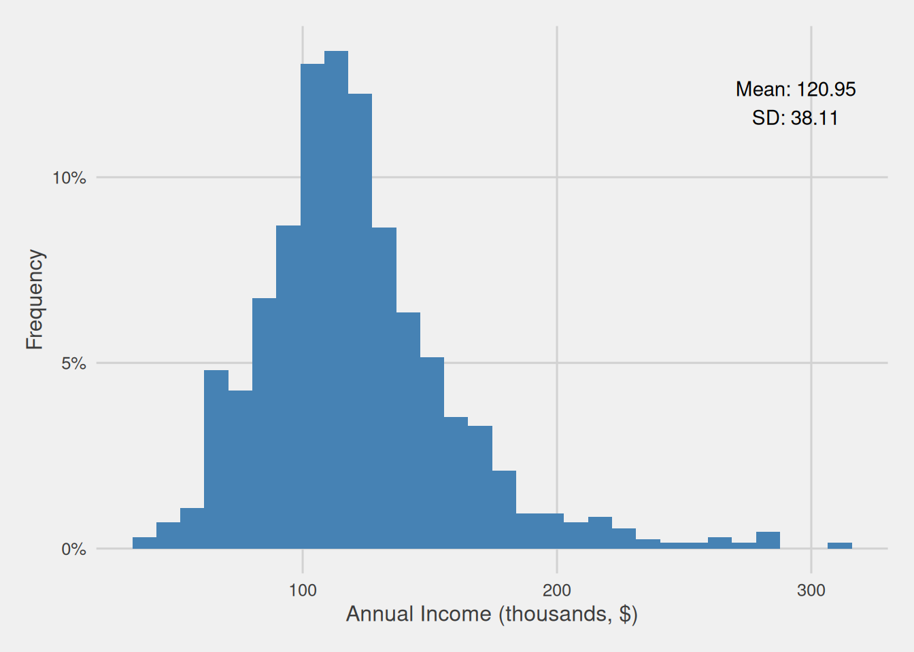
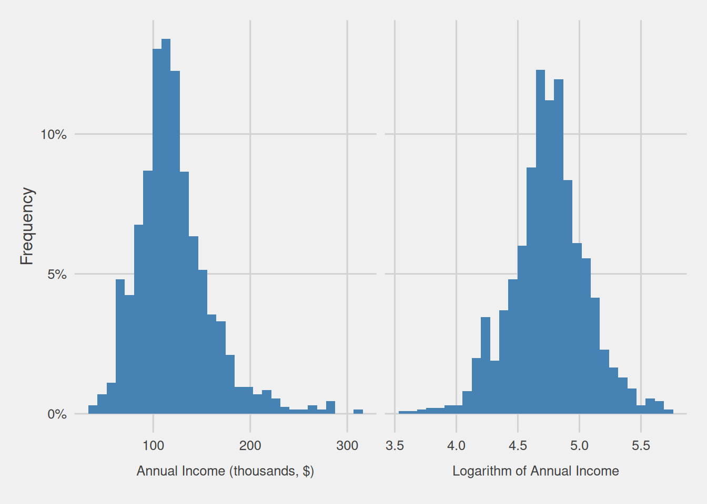
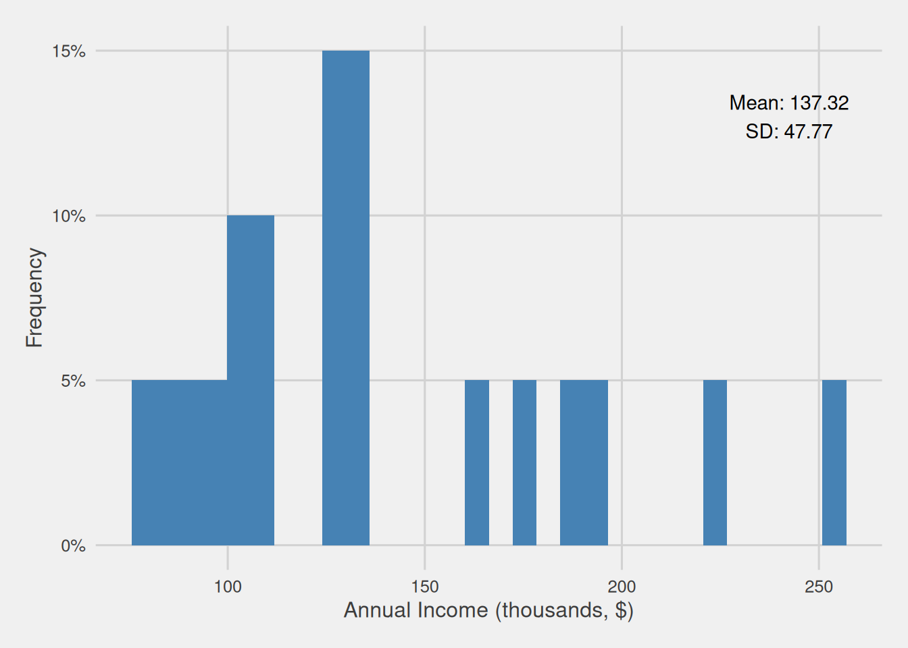

Statistics enables us to distill valuable insights from unstructured information, commonly referred to as data. This acquired knowledge empowers us to develop a deeper comprehension of the subject matter at hand, facilitating the exploration of questions that span a wide spectrum, such as:
What is the profile of our customer base?
Do our Swiss consumers exhibit a higher average expenditure compared to their Norwegian counterparts?
Does consistent alcohol consumption correlate with an elevated risk of experiencing a heart attack?
“What magnitude of sales increase can I anticipate for the upcoming year with a 20% boost in advertising expenditure?
The ideal of population and the reality of sampling
To comprehensively explore and enhance our understanding of a given issue, it is ideal to possess data pertaining to all entities impacted by that issue. For instance, in our pursuit of gaining deeper insights into our customer base, the ideal scenario involves having access to data for every single one of our customers. In this comprehensive dataset, we would find detailed information regarding each customer’s age, income, purchasing history, and other relevant attributes. Such a dataset would empower us to attain a holistic understanding of our customer base’s profile. In statistical terms, when we allude to data encompassing all entities affected by the issue of interest, we are referring to the population. Naturally, this population is contingent upon the specific focus of interest. For instance, if our objective shifted from understanding the profile of our overall customer base to that of our Swiss customers specifically, our population would comprise solely our Swiss customer subset.
Nevertheless, acquiring data for every single entity influenced by the matter of interest may often prove to be impractical, primarily due to the substantial expenses associated with such an undertaking or its constantly changing nature. Therefore, in the field of statistics, we operate with subsets derived from this population. Ideally, these subsets are constructed in such a way that each entity within them has an equal probability of being selected. Consequently, the resultant subset, known as a sample, is smaller in scale and serves as a reliable and representative image of the broader population. The fundamental concept underlying this approach is that through the observation and analysis of this sample, we can draw meaningful conclusions about the entire population, a process known as inference.
Limitations and potential bias in sampling
Nonetheless, utilizing samples entails operating with an imperfect representation of the population—a mere approximation that may deviate from the true population characteristics. Even when each individual possesses an equal probability of selection, the random nature of the process can result in the overrepresentation or underrepresentation of certain specific types or groups of entities within our sample, thereby potentially leading to skewed findings and conclusions.
Sampling in practice: Exploring our consumer base annual income
To illustrate these concepts, let’s delve into an example using a dataset from Kaggle. This dataset comprises data about 2,000 supermarket customers, encompassing a range of characteristics such as age, annual income, and education level. For the sake of this demonstration, let’s envision that this dataset encapsulates information about every single one of our customers, effectively serving as a representation of our customer population. Now, let’s suppose our objective is to gain a more profound insight into the annual income distribution among our customers.
Annual income distribution for our population
Hence, we can promptly delve into the examination of the data distribution, which we can observe through a histogram, depicted in Figure 1. This analysis unveils that the distribution of customer incomes exhibits an approximate normality, featuring an average annual income of $120,950 with a moderate degree of variability (Standard Deviation = $38,110). This implies that a substantial proportion of customers have incomes that closely align with the mean value, while fewer customers fall within the income extremes. Additionally, it is worth noting a slight rightward skew in the plot, indicating a minority of individuals with substantially higher incomes compared to the majority.

Figure 1: Customer annual income distribution (thousands, $)
Log-normal distribution
In the earlier paragraph, we highlighted that the “distribution of customer incomes exhibits an approximate normality.” To be more precise, the distribution we are discussing is formally identified as the log-normal distribution. Although it visually resembles a normal distribution, featuring a slightly bell-shaped curve, the log-normal distribution distinguishes itself by having a lower bound at zero and a positively skewed nature, leading to a more elongated right tail. The name “log-normal” stems from the phenomenon that transforming the variable into its logarithm results in a normal distribution. Figure 2 visually presents the original distribution of the customer’s annual income on the left and, on the right, showcases the result of applying a logarithmic transformation to the variable. This illustration vividly demonstrates how the logarithm transformation effectively transforms the distribution into a normal distribution.

Figure 2: Original (left) and logarithmically transformed (right) customer annual income distributions
“Collecting” a small customer sample and exploring their annual income
Having briefly explored the distribution of our customers’ annual income population, we must acknowledge the practical challenge of obtaining data from the entire population. Therefore, we opt to acquire a representative sample, a feasible alternative. In this scenario, we decided to select an easily obtainable sample of 20 customers, each having an equal probability of being included in the sample. Following the acquisition of this sample, we analyze their annual income distribution, which can be observed in Figure 3, revealing several noteworthy disparities.
Firstly, we observe that certain income brackets, present in the population data, remain absent in our sample. Additionally, we notice a higher proportion of high-income customers in comparison to the population. These disparities culminate in a higher average customer annual income (Mean = $137,320) and increased variability (Standard Deviation = $47,770) within the sample. Consequently, if we were to draw inferences based on this data, our conclusions would suggest that individuals in the sample exhibit a higher average income and greater income variability compared to the population, thus drawing into error.

Figure 3: Customer annual income distribution for our sample with 20 observations (thousands, $)
Despite these disparities, our sample offers us an initial glimpse into the broader income distribution of the entire population. While our sample may not perfectly mirror the population due to its size and inherent limitations, it serves as a foundational reference point for comprehending income patterns within the larger group. It grants us a preliminary understanding of the income ranges, tendencies, and variations we can anticipate when considering the overall population’s income distribution. However, it’s essential to acknowledge the presence of these disparities and recognize that they may impact the conclusions we can draw regarding the population.
Capturing nuances better with increased sample size
These observed disparities are unsurprising, given the inherent limitations of capturing the intricacies of our data with a small sample of just 20 consumers. Consequently, we observe the absence of individuals in various income brackets and a skewed composition compared to our population (which, in this hypothetical case, we have knowledge of, but in practice, we might not).
One might naturally question whether increasing the sample size could enhance the richness of our sample and consequently enable us to better capture the nuances present in the population. This would ultimately result in a more faithful representation. To investigate this, we will generate samples of varying sizes, specifically seven additional samples consisting of 40, 80, 120, 150, 300, 500, and 1000 randomly selected consumers from our population. ?@fig-anim-sample-distributions visually illustrates, through histograms, how the distribution changes for each of these sample sizes, including the initially created one with 20 consumers.
NULL
In this Figure, we can discern that larger sample sizes excel in capturing the subtleties inherent in the population’s data distribution. Notably, the distribution of bigger samples closely mirrors that of the population, with fewer missing income ranges and diminished disparities.
When we work with larger samples, we effectively broaden our scope of observation, incorporating a more diverse range of data points. This expanded sample size minimizes the influence of random variation and offers a more robust representation of the population. In essence, larger samples provide a more comprehensive cross-section of the population, enhancing our ability to accurately capture the underlying patterns, variations, and nuances present in the data.
Now, you might be wondering: what constitutes the ideal sample size? There is not a one-size-fits-all answer; instead, the sample size should strike a balance. It must be large enough to capture the nuances of the population while still being feasible to acquire within budget and time constraints. It is crucial to recognize that a sample will inherently exhibit differences from the population, a fundamental aspect of statistical analysis.
Summary
Statistics empowers us to glean valuable insights from data, enriching our comprehension of issues of interest.
Ideally, a complete understanding of any issue necessitates data from every entity involved, referred to as the population.
Practical constraints often require us to work with smaller, representative subsets, known as samples, where each entity in the population has an equal chance of inclusion.
Samples, while essential for making inferences about the population, have inherent limitations due to their size, as they can’t fully capture the population’s intricacies, introducing errors into our inferences.
Larger samples excel at capturing population nuances, offering a more faithful representation of its characteristics.
Code
# Load necessary librarieslibrary(tidyverse)library(ggthemes)library(gganimate)library(scales)# Read customer data from CSV file and adjust income valuescustomer_data <-read.csv("assets/customer.csv")customer_data$Income <- customer_data$Income /1000# Calculate the average and standard deviation of the income for the entire populationaverage_income_population <-mean(customer_data$Income)std_deviation_population <-sd(customer_data$Income)# Create and display a histogram for the entire population's income distributionggplot(customer_data, aes(x = Income)) +geom_histogram(aes(y =after_stat(count /sum(count) *100)), fill ="steelblue") +labs(x ="Annual Income (thousands, $)",y ="Frequency" ) +theme_fivethirtyeight() +theme(plot.title =element_text(hjust =0),axis.title.x =element_text(hjust =0.5),axis.title.y =element_text(hjust =0.5),plot.caption =element_text(hjust =0)) +scale_y_continuous(labels =percent_format(scale =1)) +annotate("text", x =max(customer_data$Income, na.rm =TRUE) *0.95, y =12, label =paste0("Mean: ", round(average_income_population, 2), "\nSD: ", round(std_deviation_population, 2))) # Set a random seed for reproducibilityset.seed(150)# Create a random sample of 20 observations from the populationcustomer_data_sample <- customer_data[sample(nrow(customer_data), 20), ]# Calculate the average and standard deviation of the income for the sampleaverage_income_sample <-mean(customer_data_sample$Income)std_deviation_sample <-sd(customer_data_sample$Income)# Create and display a histogram for the sample's income distributionggplot(customer_data_sample, aes(x = Income)) +geom_histogram(aes(y =after_stat(count /sum(count) *100)), fill ="steelblue") +labs(x ="Annual Income (thousands, $)",y ="Frequency" ) +theme_fivethirtyeight() +theme(plot.title =element_text(hjust =0),axis.title.x =element_text(hjust =0.5),axis.title.y =element_text(hjust =0.5),plot.caption =element_text(hjust =0)) +scale_y_continuous(labels =percent_format(scale =1)) +annotate("text", x =max(customer_data_sample$Income, na.rm =TRUE) *0.95, y =13, label =paste0("Mean: ", round(average_income_sample, 2), "\nSD: ", round(std_deviation_sample, 2))) ## Create samples of different sizes and create animation with their distribution# Create an empty data frame to store the samples and add a column for observationscustomer_data_samples <-data.frame()customer_data_samples$Observations <-character(0)# Define the sample sizessample_sizes <-c(20, 40, 80, 120, 150, 300, 500, 1000)# Set a random seed for reproducibilityset.seed(350)# Loop through each sample sizefor (sample_size in sample_sizes) {# Create a random sample of the specified size customer_data_sample <- customer_data[sample(nrow(customer_data), sample_size), ]# Create a label for the observations indicating the sample size customer_data_sample$Observations <-paste0(sample_size, " Observations")# Append the sample to the data frame customer_data_samples <-rbind(customer_data_samples, customer_data_sample)}# Add a label for the populationcustomer_data$Observations <-"Population"# Append the population data to the data framecustomer_data_samples <-rbind(customer_data_samples, customer_data)# Convert the "Observations" column to a factor with custom labelscustomer_data_samples$Observations <-factor( customer_data_samples$Observations,levels =c("20 Observations", "40 Observations", "80 Observations", "120 Observations", "150 Observations", "300 Observations", "500 Observations", "1000 Observations", "Population"))# Loop through the levels of the "Observations" factor and update labelsfor (i inseq_along(levels(customer_data_samples$Observations))) { sample_type <-levels(customer_data_samples$Observations)[i] subset <- customer_data_samples[customer_data_samples$Observations == sample_type, "Income"] average_income <-round(mean(subset), 2) std_deviation_income <-round(sd(subset), 2)# Update labels with mean and standard deviation informationif (i <=8) {levels(customer_data_samples$Observations)[i] <-paste(levels(customer_data_samples$Observations)[i],"Sample\n(M = ", average_income, ", SD = ", std_deviation_income, ")" ) } else {levels(customer_data_samples$Observations)[i] <-paste("Population\n(M = ", average_income, ", SD = ", std_deviation_income, ")" ) }}#Create and animate the plotp <-ggplot(customer_data_samples, aes(x = Income, fill = Observations)) +geom_histogram(aes(y =after_stat(density*width))) +labs(title ="Annual Income Distribution",x ="Annual Income (thousands, $)",y ="Frequency" ) +theme_fivethirtyeight() +scale_fill_economist() +scale_y_continuous(labels =percent_format()) +theme(plot.title =element_text(hjust =0.95, size =11),axis.title.x =element_text(hjust =0.5),axis.title.y =element_text(hjust =0.5),plot.caption =element_text(hjust =0), legend.position="none") +transition_states(Observations, transition_length =1, state_length =2) +enter_fade() +exit_fade() p <- p +labs(title ="{closest_state}")# Render the animationanim <-animate(p, nframes =150, duration =15)anim